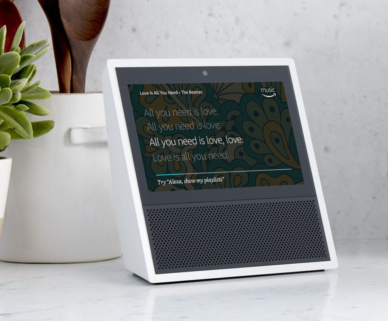
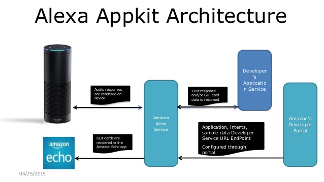
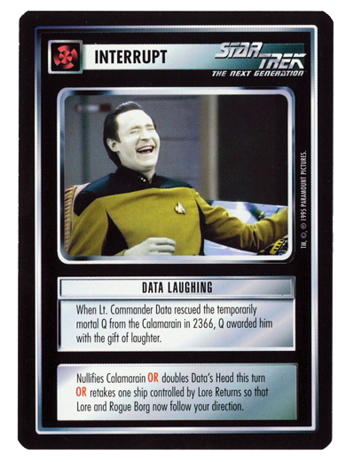
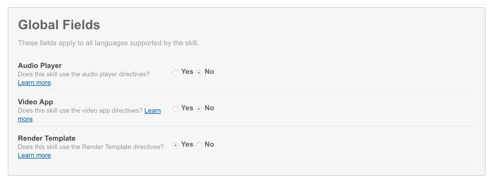
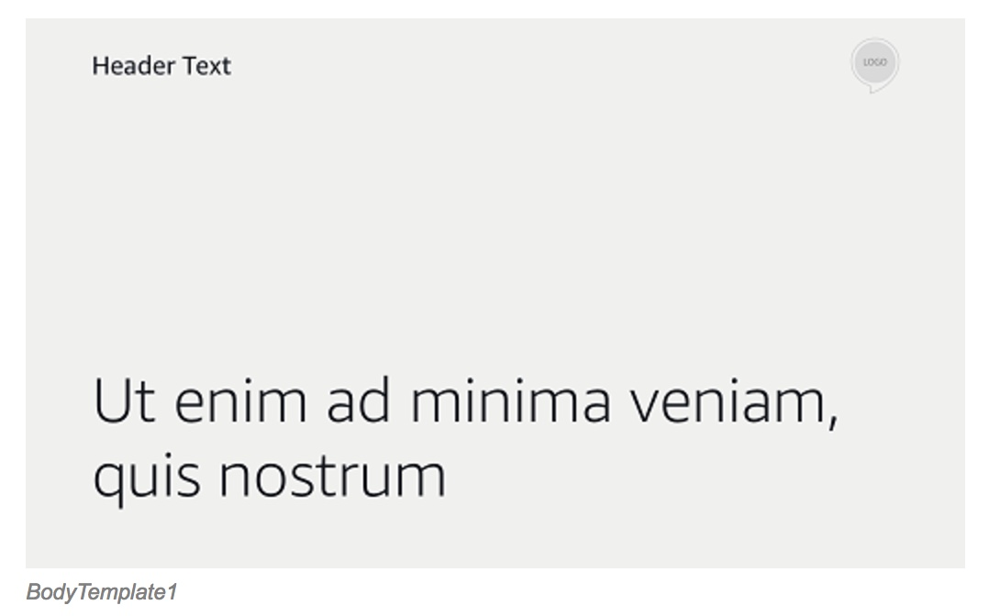
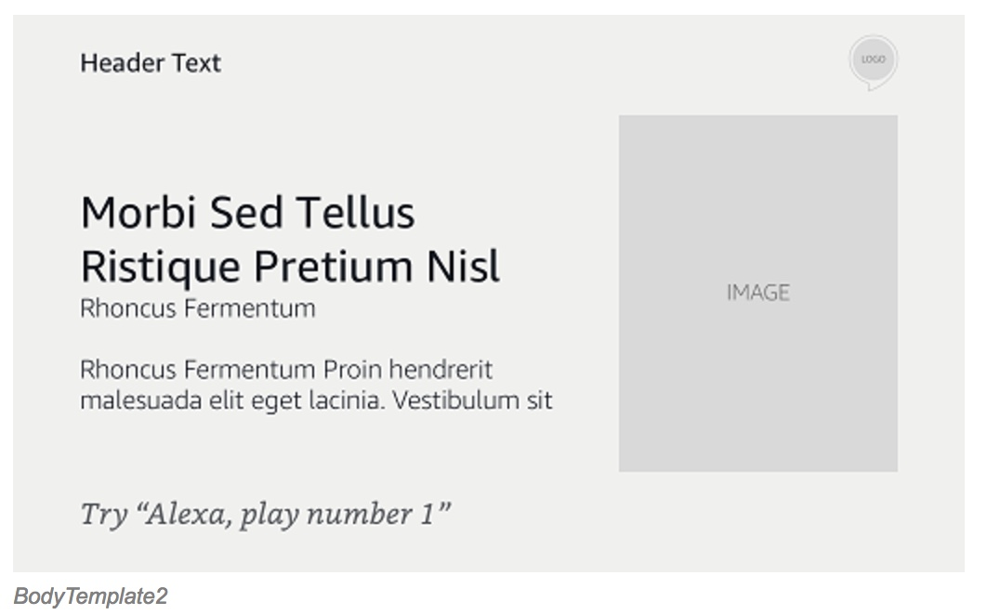
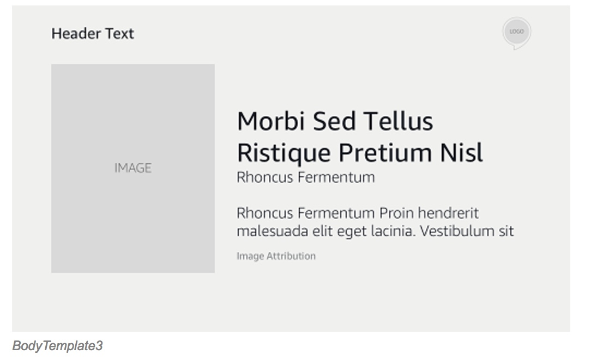
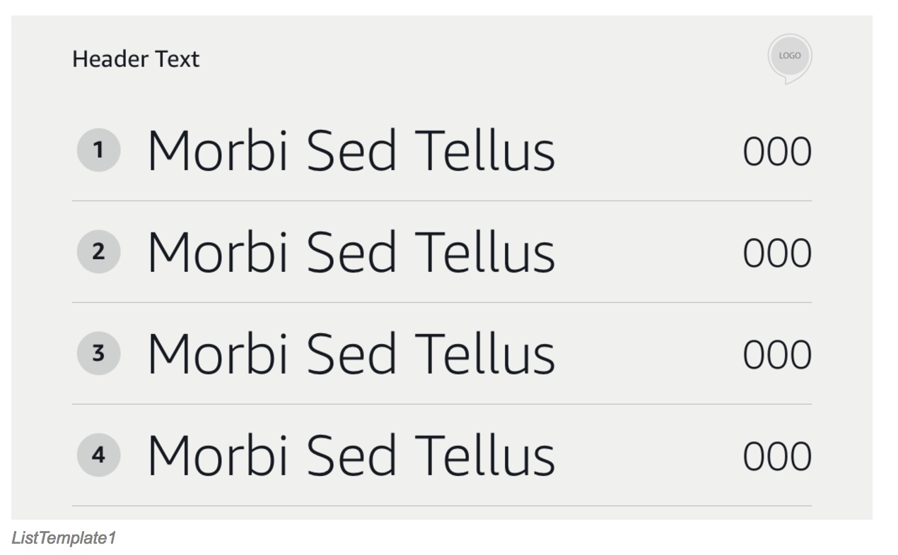

Alexa Workshop
Learn how to build Alexa Skills with Groovy and Grails
G3 Summit 2017
Created by Ryan Vanderwerf / @RyanVanderwerf - OCI ...and Lee Fox @FoxInATX
About Ryan
- Software Engineer on Grails team at OCI (Home to Grails)
- Father of 2 kiddos under 13
- Co-Chair Austin Groovy and Grails User Group
- Co-Author of Effective Gradle Implementation Video Series on Packt
- OCI - If you need Grails or Groovy support we can help
Workshop - Order of things today
- What is Alexa and about the devices
- Overview of How Skills Work - SDKs
- Break up into groups
- Get our credentials distributed to teams
- Build our first Lambda Skill in Groovy(Guided)
- Break
- Advanced Groovy Lamba Skill + breakout
- Break
Workshop - Order of things today
- Grails Lab Setup
- Grails Alexa Plugin Overview
- Build Basic Grails App
- Break
- Build Advanced Grails App with Account Linking
- Free hack time with Grails and Alexa
- Wrap-up
What is Alexa?

Alexa is a cloud based voice recognition service

There are 3 SDKS - Skills, AVS, and Home API
The Devices

Echo
The Devices
Echo Look
The Devices
Echo Show
Other manufacturers
Ecobee4
Other manufacturers

Sonos
Other manufacturers

Anker Eufy
Other manufacturers

Garmin Speak
Other manufacturers

Invoxia Triby
Other manufacturers

GE Alexa Lamp
Other manufacturers

Cowin Dida
Back to Alexa Skills - how does it work?
- App developer never talks directly to device
- Device must initiate interaction
- Alexa server response with JSON body
- Currently text to speech or small sounds clips (90s low quality)
- Run as Lamba function or separate webapp
Demo - Groovy Lambda Quiz
SDKs

- Skills SDK - custom, home, flash, and video skill types
- Voice SDK - build a device like and Echo
- We'll focus on the Skills(custom) API today
Skills SDK - Don't Call Us, We'll Call You
- We host this as a web service that parses JSON requests
- Responds in kind with JSON
- Alexa Java speechlet SDK gets us mostly there
- See link for community driven Java SDK at end
Skills SDK - Speechlet SDK
- Does some things for us like validate the request and call events
- Gives us decent interfaces that use an API form SpeechResponses
- Also helps us build Card responses and stream Audio
- Let's dig in to the specifics!
- I've forked and fixed up the Java SDK to be more current at
Skills SDK - Intent Schema

- This tells Alexa what actions your app can do
- Describes intents and slots used
- When you upload this(and utterances), Alexa calculates speech variations to launch them
- See sample IntentSchema.json
Skills SDK - Slots

- This is how Alexa parameterizes commands
- Very simple list of options
- Slots don't work well for variable/word parameter responses
- Define custom slots for types not built into Alexa
- Built in slot types always growing list is at http://amzn.to/2fHnHd5
Skills SDK - Sample Utterances
- Train Alexa on what the commands it will understand
- This is the phrases that activate the intents
- Use {} and | to use parameters
- When you upload this, Alexa calculates speech variations to launch Intents
- Protip: use redundant and misspelled word variations to help Alexa understand
The Alexa App

- This is where you can do non-speech interactions
- See a log of what you've done
- See cards returned by skills
- Install Skills / browse Skills library by category
- Can use mobile app or go to echo.amazon.com
Skills SDK - Cards

- This is similar to Android cards but more basic
- You can launch a seperate card and speech response for intents
- There are 3 main cards: Simple(text only), Standard(1 pic), and LinkAccount
- Amazon limits what kind of content can be on each type of card (no HTML/js/css)
Skills SDK - Intents
- Uses concept of events from interface Speechlet to trigger bits of your code
- Events are: onSessionStarted, onLaunch, onIntent, onSessionEnded
- AudioPlayer skill events are: onPlaybackStarted, onPlaybackFinished, onPlaybackStopped, onPlaybackNearlyFinished, onPlaybackFailed, onSystemException
- The only event you -have- to override is 'onIntent'
Skills SDK - AudioPlayer Directives
- This tells Alexa to queue, play, or stop playback
- Directives are AudioDirectivePlay, AudioDirectiveStop, AudioDirectiveClearQueue
- These are tacked on as a List to a SpeechletResponse via SpeechletResponse.newTellResponse
- These are only suitable for long duration playback like music or podcasts - Use SSML for audio snippets in conversation
That's cool, but can it only to text to speech?
- Nope! We can use SSML to play sounds clips!
- Limited to 90s, 48kbit SSL hosted mp3 only and picky about format
- Can do other commands like pronounce words
- Let's check out the SSML Reference http://amzn.to/1OaLmAZ
- New! Audio and Video Player support! http://amzn.to/2fRikwA and http://amzn.to/2sbO3v3
SSML Audio Protip
Use ffmpeg to resample your mp3 so amazon likes it (s3 is easiest).
ffmpeg -y -i
SSML Markup
Audio SSML Example
SSML Markup
Pronounce SSML Example
Here is a number spoken as a cardinal number:
12345 .
Here is the same number with each digit spoken separately:
12345 .
Here is a word spelled out: hello
Complete SSML reference http://amzn.to/1OaLmAZ
Testing - couple options
- Using the developer.amazon.com test tab
- Use echosim.io browser tester!(No Audio skills support)
- Use a physical device that is attached to your account (share with beta feature!)
Groovy Podcast App
- Uses Groovy Lambdas and DynamoDB - Certified and Live at http://amzn.to/2gdst1R
- Plays Groovy Podcasts on demand
- Let's try it out!
Visuals on the Echo Show
Enable the New Directives
BodyTemplate1
BodyTemplate2
BodyTemplate3
ListTemplate1
ListTemplate2

The Code
BodyTemplate1 template = new BodyTemplate1()
template.setTitle("Hero Quiz")
BodyTemplate1.TextContent textContent = new BodyTemplate1.TextContent()
RichText richText = new RichText()
richText.text = cardText
textContent.setPrimaryText(richText)
template.setTextContent(textContent)
Image backgroundImage = new Image()
ImageInstance imageInstance = new ImageInstance()
imageInstance.setUrl("https://s-media-cache-ak0.pinimg.com/originals/e4/30/78/e43078050e9a8d5bc2f8a1ed09a77227.png")
ArrayList imageInstances = new ArrayList()
imageInstances.add(imageInstance)
backgroundImage.setSources(imageInstances)
template.setBackgroundImage(backgroundImage)
RenderTemplateDirective renderTemplateDirective = new RenderTemplateDirective()
renderTemplateDirective.setTemplate(template)
renderTemplateDirective
See It In Action
Alexa, enable Hero QuizLet's do more advanced stuff!
- How can I make the an app to use MY credentials?
- How do does Grails fit into this?
- Let's talk about account linking then take a look
Account Linking
- Uses OAuth
- Supports Implicit or Authorization code
- Use an Intent to send an AccountLinkCard
- Docs at http://amzn.to/1OQWqkq
Setting up your own server
- Must use SSL and be accessible to Alexa via internet
- You can use self-signed certs in dev only
- Self signed certs MUST have hostname match common name
- Trusted certs support most cert providers
- Docs at http://amzn.to/1OQWqkq
VictorOPS
- Uses OAuth, Groovy, Grails, AWS DynamoDB
- Supports OAUTH to authenicate a user
- Uses Spring Security UI to register accounts
- Provides Admin UI to manage credentials for VictorOPS service
- Code at https://github.com/vanderfox/alexa-victorops
Demo - VictorOPS
Publishing
In order to publish your app you must...
- Supply an icon of 108x108px and large icon 512x512
- Valid Recognized Cert (For non Lamba)
- Must have a VALID privacy policy and terms of use
- Must supply proper HELP anytime during session
- Must supply ability to stop skill by saying "STOP" or "CANCEL"
- Must be clear it doesn't violate any trademark or IP
- A real person will fire up the app and use it to test
- Process takes about 2-7 days for feedback
UX Tips
Here are some tips to help the user have a good experience
- Try to make sample utterances as specific as possible
- More sample utterances are better
- Use custom slots wherever possible
- Make sure Alexa always responds to a request when prompted
- Be Specific - Guide user during prompts tell the user what to say
- Use misspellings or phonetics in your code to help Alexa understand
Gotchas
Here are some gotchas
- Use number type for numbers- it will translated spoken word to numbers not words
- Sometimes you must have Amazon Literal Type to parse better
- Some invocation don't work - Hello, Amazon, Echo. Grails is often mis-interpreted
- SSL Self-signed certs - common name must match hostname of app
- SSML Audio - follow tips given, it's very picky and needs valid CA cert
- Audio player skills - audio content must be streamed in SSL as well
- slot values don't have to be complete just enough to guide it
Lab Time!
Follow along here http://bit.ly/2BphvBZ
Source Links
- Grails 3 Plugin: http://bit.ly/2a9RQyz or http://bit.ly/2a9RQyz
- Twitter AWS Groovy Lambda App: http://bit.ly/2afiibI
- Twitter Grails 3 App: http://bit.ly/2aAg9d2
- Hero Quiz Groovy Lambda App: http://bit.ly/2aqLqAu
- Run Skills in Browser: http://echosim.io
- Amazon Developer Portal to register Skills: https://developer.amazon.com
Source Links Continued
- Lazybones template to generate Lambda Groovy Skills http://bit.ly/2afiKXE
- Alexa Workshop Labs http://bit.ly/2ajJR4Y
- Lamba Groovy Example from Talk http://bit.ly/2anfNTp
- HelloWorld Grails Account Linking Sample from lab http://bit.ly/2ahQpE1
- Java SDK updated with AudioPlayer support http://bit.ly/2ejX41o
- Groovy Podcast Skill http://bit.ly/2fCAHQN
Source Links Continued
- VictorOPS Skill https://github.com/vanderfox/alexa-victorops
- Library Intents http://amzn.to/2sbO3v3
Special Thanks
- Lee Fox for helping develop all this good stuff
- Bendoit Benoit Hédiard for his awesome Groovy Lamba code sample from GGX
THE END 
I hope you have enjoyed the session!
Free free to contact on twitter or google+ @RyanVanderwerf or email rvanderwerf@gmail.com
or Lee Fox @FoxInATX or lee.h.fox@gmail.com